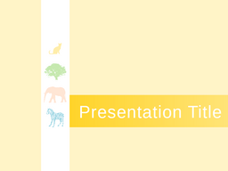
Open Impress Template Gallery
119개 공개 Impress 템플릿을 로컬 .otp 파일, 썸네일, HTML 참조 페이지로 정리했습니다. LibreOffice가 설치되어 있지 않은 현재 환경에서는 고화질 PPT 렌더링 대신 템플릿 패키지와 구조 추출 HTML을 보존합니다.
Fedora Slideshow Templates: 18
LibreOffice 3.5 Templates: 25
LibreOffice 4.4 Design Candidates: 11
LibreOffice 5.0 Design Candidates: 24
LibreOffice 5.1 Templates: 4
LibreOffice Call for Templates: 26
Material Simple Templates: 11
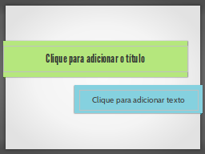
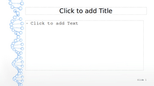
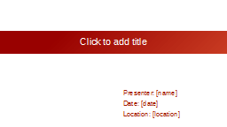
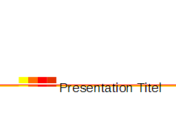
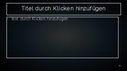
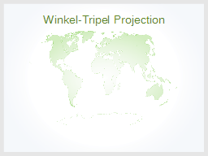
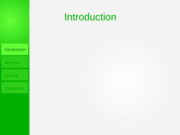
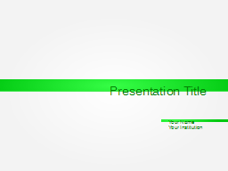
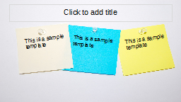
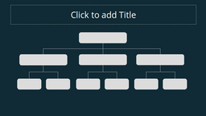
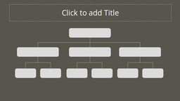
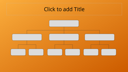
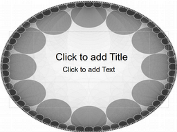
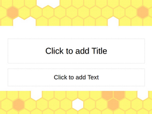
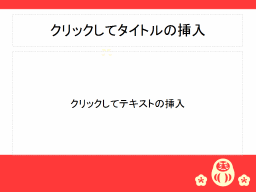
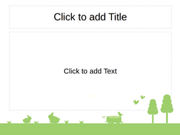
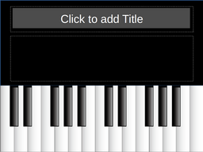
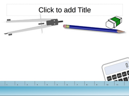
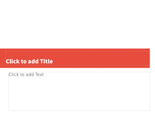
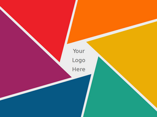
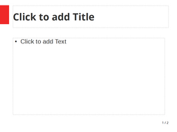
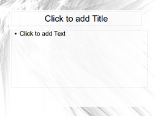
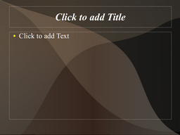
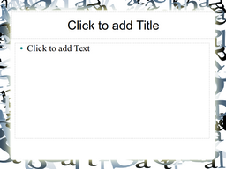
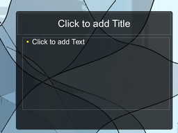
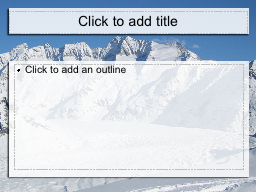
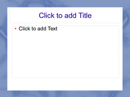
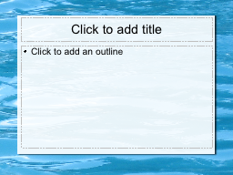
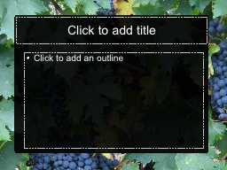
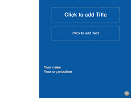

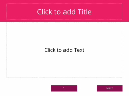